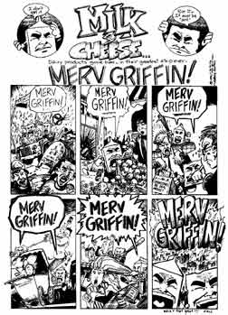
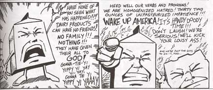

| DAIRY PRODUCTS GONE BAD | ||
|  | I guess I should point out that you should not try these things at home. As the author, Evan Dorkin, points out, "Milk and Cheese are indestructible, you are not." They are the ultimate polite person's vice. They do what nice people don't and show no remorse.They join the War on Drugs, not to help people, but to stop the anti-drug commercials interrupting their favorite t.v. shows. Their final solution to the drug problem is to burn the city down("Fire -- the Biblical cleanser") A more serious side occasionally rears its head, however, such as the strip addressing the Rodney King beating and one taking on animal testing. Despite the rampant violence and insolence, Mr. Dorkin appears to have a conscience, but he doesn't let it get in the way of Milk and Cheese's fun. With such slogans as "Onward to mayhem!" and |
"Let things get out of hand!" M&C take no prisoners in their war against unfunniness and general lameness.I suppose I should also note that what sets M&C apart from your average violence is the clever style, constantly playing with the comic medium and the readers expectations. In one panel, they're terrorizing old ladies, in the next, they have halos and Little Orphan Annie eyes(and in another, they may have halos while terorizing old ladies.) So enough of my ranting about how great Milk and Cheese are. Now it's your turn to get off your lazy butt(actually all you have to do is point and click) and buy their stuff at slavelabor.com Go on! Do it! You're not getting any funnier by not reading it, and although you probably are terminally unfunny, you'll never know if you don't read Milk and Cheese. Okay, fine, enough of the pleading, M&C say "Ick!", "Poo!" and "Feh!", and spit on you. HUZZAH!!! |
Milk and cheese are cool. They are funny, you are not. When they're not rioting or burning down orphanages, they watch tv and drink massive amounts of alcohol. Even though I don't watch t.v., I still find them very funny. The above is taken from Fun With Milk & Cheese, which includes crashing a wine tasting, demolishing hippies, destroying a comic book convention, and a game of truth or dare where the dares include drinking 50 beers(that's breakfast) and punching God in the kidney. |
 | |